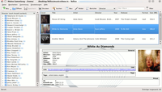
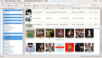
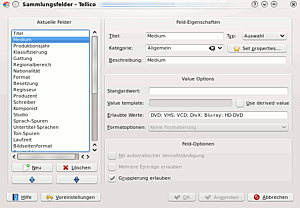
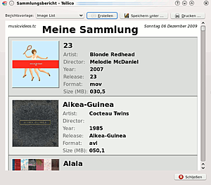

Tellico
Dieser Artikel wurde für die folgenden Ubuntu-Versionen getestet:
Ubuntu 16.04 Xenial Xerus
Zum Verständnis dieses Artikels sind folgende Seiten hilfreich:
Tellico  ist eine universelle Sammlungsverwaltung für KDE. Das Programm bringt zahlreiche Vorlagen mit, zum Beispiel für Musik-, Film- und Buchsammlungen. Bei Bedarf erstellt man individuelle Sammlungstypen für praktisch alle Objektarten.
ist eine universelle Sammlungsverwaltung für KDE. Das Programm bringt zahlreiche Vorlagen mit, zum Beispiel für Musik-, Film- und Buchsammlungen. Bei Bedarf erstellt man individuelle Sammlungstypen für praktisch alle Objektarten.
Tellico verfügt u. a. über folgende Funktionen:
Sammlungsvorlagen für Bibliografien, Briefmarken, Bücher, Comics, Musik, Münzen, Sammelkarten, Computer- und Brettspiele, Videos und Weine
individuelle Sammlungen
manuelles Hinzufügen weiterer Datenquellen
verschiedene Anzeige-Templates
umfangreiche Gruppierungs- und Filterfunktionen
Sammlungsberichte im HTML-Format oder zum Ausdrucken
Import: Alexandria-, GCStar- und Bibtex-Daten, Metadaten von Audio-CDs und Audiodateien, u. a.
Export in die Formate: CSV, HTML, PDF, PilotDB, XML, ZIP, u. a.
u. v. m.
 ,
,
Installation¶
Tellico ist in den Paketquellen enthalten. Es muss folgendes Paket installiert werden [1]:
tellico (universe)
 mit apturl
mit apturl
Paketliste zum Kopieren:
sudo apt-get install tellico
sudo aptitude install tellico
Nach der erfolgreichen Installation findet man das Programm unter "K-Menü -> Programme -> Büroprogramme -> Verwaltung von Sammlungen" bzw. "Sammlungsverwaltung". Unter GNOME findet man es unter "Anwendungen -> Büro -> Tellico".
Bedienung¶
Programmoberfläche¶
 
Neue Sammlung erstellen¶
Es existieren zahlreiche Sammlungsvorlagen, die man mit einem Klick auf "Datei -> Neu" anwählt. Neue Einträge fügt man über "Sammlung -> Neuer Eintrag" hinzu. Alternativ sucht man über "Bearbeiten -> Internet-Suche" in verschiedenen Online-Datenbanken nach Titeln, Personen, ISBNs, etc. Passende Ergebnisse nimmt man mit "Eintrag hinzufügen" in die Sammlung auf. Bei Bedarf erstellt man über den Menüpunkt "Datei -> Neu -> Neue benutzerdefinierte Sammlung" einen individuellen Sammlungstyp und passt die Felder der Datenbank nach den eigenen Vorstellungen an.
Datenfelder anpassen¶
Über "Sammlung -> Datenfelder der Sammlung" passt man die Formularfelder vorgegebener und benutzerdefinierter Sammlungen an. Folgende Einstellungen sind möglich:
| Feld-Eigenschaften | |
| Menüpunkt | Beschreibung |
| "Titel" | Hier gibt man den Titel ein, den das Feld im Formular bekommen soll. |
| "Kategorie" | Kategorien sind Ordnungselemente und werden im Eingabeformular als gesonderte Reiter angezeigt. Um eine neue Kategorie zu erstellen, gibt man die gewünschte Bezeichnung ein und bestätigt mit "Anwenden". Typische Kategorien sind z.B. "Link", "Album Cover" oder "Kommentare". |
| "Beschreibung" | Beschreibende Angaben; stimmen in der Regel mit dem Titel überein. |
| "Typ" | Hier legt man den Feldtyp fest. Es stehen zur Auswahl: "Einfacher Text", "Absatz", "Auswahl", "Ankreuzfeld", "Nummer", "URL", "Datum", "Tabelle", "Bild" und "Bewertung". |
| "Set properties" | An dieser Stelle bestimmt man die erweiterten Parameter des Feldtyps. So erweitert man z.B. die Bewertungsfunktion von 5 auf 10 Sterne. |
| Value options | |
| Menüpunkt | Beschreibung |
| "Standardwert" | Das Feld wird stets mit dem eingegebenen Wert ausgefüllt. |
| "Value template" | Ein frei wählbares Template bestimmt den Inhalt des Feldes. Setzt man die Option "Use derived value" stellt Tellico den Eintrag aus anderen Elementen zusammen. Zum Beispiel erzeugt das Template "%{year} %{description}" einen Eintrag mit dem Jahr, gefolgt von der Beschreibung. |
| "Erlaubte Werte" | Die vorgegebenen Werte, die beispielsweise bei einer Auswahl zur Verfügung stehen. Die einzelnen Elemente werden mit einem Semikolon getrennt. |
| "Formatoptionen" | Die standardmäßige Formatierung der Einträge. Möglich sind: "keine Formatierung", "nur automatische Großschreibung erlauben", "als Titel formatieren" oder "als Namen formatieren". |

| Feld-Optionen | |
| Menüpunkt | Beschreibung |
| "Mit automatischer Vervollständigung" | Einmal aktiviert, merkt sich Tellico die Feldeingaben und vervollständigt diese auf Wunsch automatisch. Diese Option sollte nur in notwendigen Fällen gesetzt werden, da sie das Programm verlangsamen kann. |
| "Mehrere Einträge erlauben" | Ein Feld kann mehrere Einträge enthalten. Diese müssen durch ein Semikolon voneinander getrennt werden. |
| "Gruppierung erlauben" | Tellico erstellt aus Feldeingaben eigene Gruppen. Damit ist es möglich, bestimmte Elemente aller Einträge gemeinsam anzuordnen, z.B. alle Regisseure, Albentitel, Jahreszahlen, etc. |
Sammlungsbericht erstellen¶
Über den Menüeintrag "Sammlung -> Berichte erzeugen" erstellt man individuelle Sammlungsübersichten im HTML-Format oder zum Ausdrucken. Diese Formattypen sind vorgegeben:

| Berichtsvorlagen | |
| Vorlage | Beschreibung |
| "Column View" | Eine Ansicht der in Tellico aktivierten Spalten. |
| "Group Summary" | Statistische Übersicht der vorhandenen Gruppen und ihrer Elemente. |
| "Group View" | Visualisiert alle Einträge sortiert nach der aktuell eingestellten Gruppe. |
| "Image List" | Eine Bilderansicht der Sammlungseinträge nebst grundlegender Informationen. |
| "Loan View" | Eine Ansicht der verliehenen Titel. |
| "Title Listing (Horizontal)" | Einfache, horizontal sortierte Aufreihung der Titel aller Sammlungseinträge. |
| "Title Listing (Vertical)" | Einfache, vertikal sortierte Aufreihung der Titel aller Sammlungseinträge. |
| "Tri-Column" | Dreiteilige Sammlungsansicht. Nur für Video-Sammlungen. |
Tastenkürzel¶
Tellico lässt sich auch über Tastenkürzel bedienen. Die Eingaben passt man über "Einstellungen -> Kurzbefehle festlegen" an. Die Standardbefehle lauten wie folgt:
| Standardkürzel | |
| Taste | Funktion |
| Strg + A | Alles auswählen |
| Strg + X | Ausschneiden |
| Strg + ⇧ + A | Auswahl aufheben |
| Strg + Q | Beenden |
| Strg + U | Datenfelder der Sammlung |
| Strg + P | |
| Strg + V | Einfügen |
| Strg + E | Eintrag bearbeiten |
| Strg + Y | Eintrag duplizieren |
| Strg + D | Eintrag löschen |
| Strg + J | Erweiterter Filter |
| Strg + F | Filter |
| Strg + G | Gruppierung ändern |
| Strg + N | Neuer Eintrag |
| Strg + M | Internet-Suche |
| Strg + C | kopieren |
| Strg + R | Sammlung umbenennen |
| Strg + S | Speichern |
| F1 | Handbuch |
| ⇧ + F1 | Was ist das? |
Problemlösung¶
Amazon-Suche¶
Am 15. August 2009 hat Amazon seine Product Advertising API umgestellt. Ein Zugriff auf die Datenbank der Webseite setzt seitdem eine Authentifizierung voraus. Tellico unterstützt diese Methode ab Version 2.0. Um die Amazon-Suche hinzuzufügen, geht man folgendermaßen vor:
Zunächst legt man unter "Einstellungen -> Tellico einrichten -> Datenquellen" einen neuen Eintrag an. Als Namen gibt man eine beliebige Bezeichnung, z.B. "Amazon" ein. Bei Art der Quelle wählt man "Amazon.com Web Services" aus. Alle anderen Einstellungen legt man beliebig fest. Nun klickt man auf den Link "Sign up for an account" und meldet sich im Browser mit seinen Amazon-Benutzerdaten an. Auf der Amazon-Webseite folgt man den Anweisungen und erhält am Ende einen "Access key" sowie einen "Secret key". Beide gibt man an entsprechender Stelle in der neu erstellten Datenquelle ein und bestätigt die Änderungen.
Fehlerhafter GNOME-Menü-Eintrag¶
Unter GNOME kann es vorkommen, dass sich Tellico nicht über den Eintrag im Hauptmenü starten lässt. In diesem Fall passt man den Programmstarter manuell an [3]. In den Eigenschaften des Tellico-Eintrags ersetzt man den angezeigten Befehl durch:
tellico
Nun lässt sich das Programm wie gewohnt ausführen.
- Erstellt mit Inyoka
-
 2004 – 2017 ubuntuusers.de • Einige Rechte vorbehalten
2004 – 2017 ubuntuusers.de • Einige Rechte vorbehalten
Lizenz • Kontakt • Datenschutz • Impressum • Serverstatus -
Serverhousing gespendet von